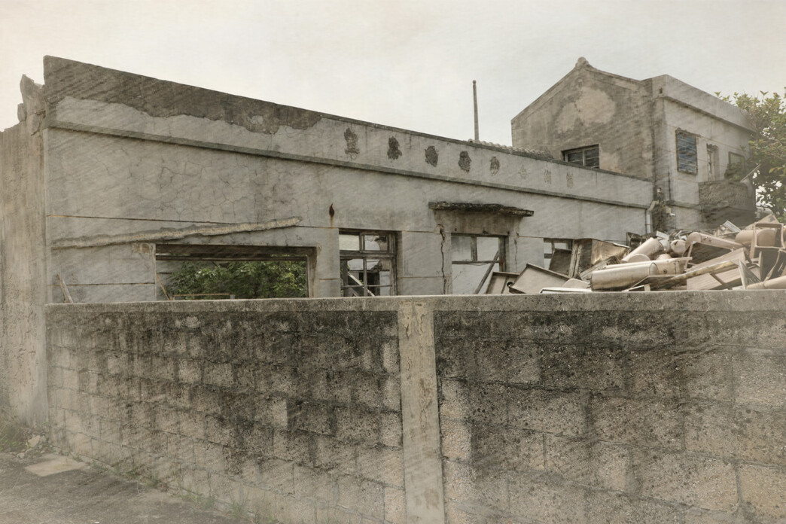
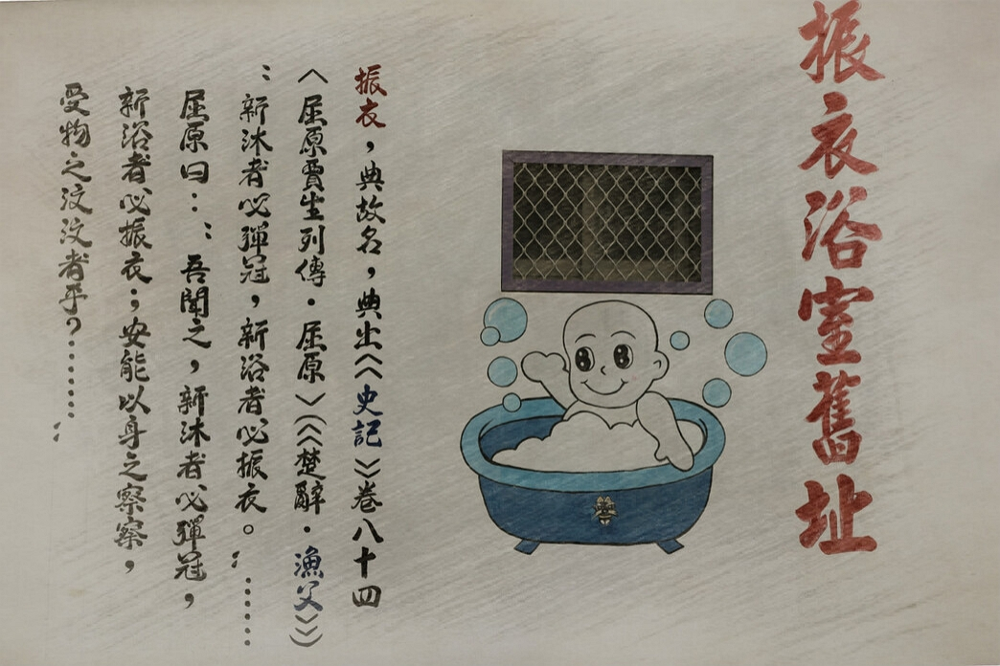

Hot Spots & Location
Seawall Park
Seawall OK Park is located on County Road 203. The oyster shell mounds originally surrounding the area have been cleared by the public office. After clearing the location, the area has been expanded and improved into a "Love Park" for the public. As it was once used in a music video by Mayday (a popular Taiwanese band) it became a check in attraction for Mayday fans and tourists alike.Wuying Army
Temples in Penghu each have Wuying in their jurisdiction, dispatched by a main god to guard the region and maintain strong garrisons of lesser guardian deities to suppress demonic attacks and keep the peace.Guo's Blessed Oyster
A big attraction when visiting Penghu is the seafood. The fresher the seafood, the more appealing/enticing it is. Guo's Blessed Oyster uses clean sea water to cultivate healthy oysters and ensure every harvested batch of oysters is the freshest quality. Gourmands must not miss out on these oysters and other local specialties.Dexin House
Amongst one of Penghu's most important historical buildings, this old house's beauty cannot be overlooked. Built in Western baroque style, it used to be a private school in addition to being a home to one of Jiangmei's most influential families, the Wu family.The Sea Outpost
This seascape has become one of the most popular in recent years, a must-visit check in attraction of Jiangmei. Various scenic spots in the sea are adjacent to Yongan Bridge in Penghu and Jiangmei Fishing Port. The hut in the middle of the sea has dreamy scenery changes in accordance with the tide.Homecoming Fried Oyster
The fresh fried oyster found on the way to Paradise Road is crispy and extremely popular in the area. Business tends to be so good police officers have to regularly patrol the area to catch anyone illegally parked in the area while waiting for the oysters. Gourmands travelling Taiwan should not miss giving fried oysters a try while in Penghu.Aunt Wei’s Old Residence
This is the old house of a local role model, Qiuwei Yang. She was given the Model Mother of Penghu County award and is also the only Model Daughter-in-Law of Penghu, awarded by the Taiwan Provincial Government for her good deeds and filial piety. The villagers regarded her highly, later naming her "Aunt Wei" respectfully. Come visit her old residence to commemorate her virtue.Longde Temple
A temple over three hundred years old, first constructed in 1711. It is the only temple in Penghu dedicated to the worship of the Jade Emperor's third daughter who protected villagers from bombing in World War II—as well as Chinese Cupid for tourists seeking blessings and a good marriage.Nong Pu, the Farm Yard
Changgui Chen, a villager of Jiangmei, placed the nameplate "Nong Pu" on his house in 1908 (marked the 41st year of the Meiji Era while Penghu was under Japanese colonization). He was known to be a warm and compassionate philanthropist, who welcomed those stranded in Magong City into his home to stay the night. Truly a historical site worthy of admiration and visitation 
Paradise in Service
One of the two remaining ruins of chartered tea houses left in Taiwan. After the Kuomintang's (KMT Party) defeat in the Chinese Civil War in 1949, the ROC government and its army retreated to Taiwan, Penghu, Kinmen, and Matsu. While troops were stationed on the aforementioned islands, the military established special brothels for the duration of the soldiers' stay. 
Public Bath
It used to be a public bathroom run by the Wu family for soldiers from the nearby barracks from the 1950s to 1970s where soldiers can bathe.